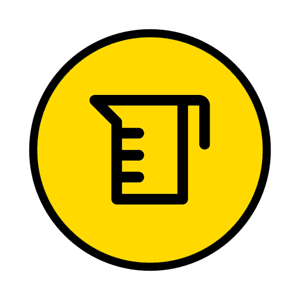

<!DOCTYPE html>
<html>

<head>
    <meta charset="utf-8">
    <meta http-equiv="X-UA-Compatible" content="IE=edge">
    <meta name="viewport" content="initial-scale=1,user-scalable=no,maximum-scale=1,width=device-width">
    <meta name="mobile-web-app-capable" content="yes">
    <meta name="apple-mobile-web-app-capable" content="yes">
    <meta name="theme-color" content="#000000">
    <meta name="description" content="">
    <meta name="author" content="">
    <title>Calidad de Agua </title>

    <link rel="stylesheet" href="css/bootstrap.min.css">
    <link rel="stylesheet" href="css/font-awesome.min.css">
    <link rel="stylesheet" href="css/leaflet.css">
    <link rel="stylesheet" href="css/MarkerCluster.css">
    <link rel="stylesheet" href="css/MarkerCluster.Default.css">
    <link rel="stylesheet" href="css/L.Control.Locate.css">
    <link rel="stylesheet" href="css/leaflet.groupedlayercontrol.css">
    <link rel="stylesheet" type="text/css" href="css/L.Control.ZoomBar.css" />
    <link rel="stylesheet" href="css/L.Control.MousePosition.css" />
    <link rel="stylesheet" href="css/app.css">
    <link rel="stylesheet" href="css/leaflet-search.css" />
    <link rel="stylesheet" href="css/Control.MiniMap.css" />
    <link rel="stylesheet" href="css/style.css">

    <link rel="apple-touch-icon" sizes="76x76" href="images/favicon-76.png">
    <link rel="apple-touch-icon" sizes="120x120" href="images/favicon-120.png">
    <link rel="apple-touch-icon" sizes="152x152" href="images/favicon-152.png">
    <link rel="icon" sizes="196x196" href="images/favicon-196.png">
    <link rel="icon" type="image/x-icon" href="images/logo.ico">

    <script src="js/jquery-2.1.4.min.js"></script>
    <script src="js/bootstrap.min.js"></script>
    <script src="js/leaflet.js"></script>
    <script src="js/leaflet.markercluster.js"></script>
    <script src="js/L.Control.Locate.min.js"></script>
    <script src="js/leaflet.groupedlayercontrol.js"></script>
    <script type="text/javascript" src="js/L.Control.ZoomBar.js"></script>
    <script src="js/L.Control.MousePosition.js"></script>
    <script src="js/leaflet-search.js"></script>
    <script src="js/Control.MiniMap.js" type="text/javascript"></script>

</head>

<body>
    <div id="map"></div>
    <script>
    var marcador = L.icon({
        iconUrl: "./images/WQ_ico.png",
        iconSize: [35, 35], // size of the icon
        // shadowSize: [80, 90], // size of the shadow
        // iconAnchor: [22, 94], // point of the icon which will correspond to marker's location
        // shadowAnchor: [80, 90], // the same for the shadow
        // popupAnchor: [-3, -76] // point from which the popup should open relative to the iconAnchor
        });

     // Varios Mapas Base 
        var Google = L.tileLayer('https://mt1.google.com/vt/lyrs=y&x={x}&y={y}&z={z}', { foo: 'bar', attribution: '&copy; <a href="https://www.google.at/permissions/geoguidelines/attr-guide.html">Map data ©2023 Google</a>' }),
            OpenStreetMap_Mapnik = L.tileLayer('https://{s}.tile.openstreetmap.org/{z}/{x}/{y}.png', { maxZoom: 19, attribution: '&copy; <a href="https://www.openstreetmap.org/copyright">OpenStreetMap</a> contributors' }),
            CartoDB_DarkMatter = L.tileLayer('https://{s}.basemaps.cartocdn.com/dark_all/{z}/{x}/{y}{r}.png', {
                attribution: '&copy; <a href="https://www.openstreetmap.org/copyright">OpenStreetMap</a> contributors &copy; <a href="https://carto.com/attributions">CARTO</a>',
                subdomains: 'abcd',
                maxZoom: 20
            });

        // Varios Marcadores segun tipo (Proyectos)
        var AAR_minsur = L.marker([-15.44076, -70.59655], {
                icon: marcador,
                draggable: false,
                title: "Aguas Arriba Minsur",
                //attribution: "<a href='https://hugoaluque.github.io/Hector-Hugo-Anamuro-Luque/'target='blank'> By HugoAñamuro</a> ",
            }).bindPopup("En Construcción", { maxWidth: "auto" }),
            AAB_minsur = L.marker([-15.46717, -70.64026], {
                icon: marcador,
                draggable: false,
                title: "Aguas Abajo Minsur",
            }).bindPopup("En Construcción", { maxWidth: "auto" }),
            AAR_santa_lucia = L.marker([-15.59772, -70.72043], {
                icon: marcador,
                draggable: false,
                title: "Aguas Arriba Santa Lucia",
            }).bindPopup("En Construcción", { maxWidth: "auto" }),
            AAB_santa_lucia = L.marker([-15.68441, -70.59994], {
                icon: marcador,
                draggable: false,
                title: "Aguas Abajo Santa Lucia",
            }).bindPopup("En Construcción", { maxWidth: "auto" }),
            Rio_cerrillos = L.marker([-15.68796, -70.64192], {
                icon: marcador,
                draggable: false,
                title: "Río Cerrillos",
            }).bindPopup("En Construcción", { maxWidth: "auto" }),
            AAR_cabanillas = L.marker([-15.67828, -70.40746], {
                icon: marcador,
                draggable: false,
                title: "Aguas Arriba Cabanillas",
            }).bindPopup("En Construcción", { maxWidth: "auto" }),
            AAB_cabanillas = L.marker([-15.63016, -70.33799], {
                icon: marcador,
                draggable: false,
                title: "Aguas Abajo Cabanillas",
            }).bindPopup("En Construcción", { maxWidth: "auto" }),
            Rio_cabanillas = L.marker([-15.58205, -70.29095], {
                icon: marcador,
                draggable: false,
                title: "Río Cabanillas",
            }).bindPopup("En Construcción", { maxWidth: "auto" }),
            Puente_Lampa = L.marker([-15.38054, -70.36198], {
                icon: marcador,
                draggable: false,
                title: "Puente Lampa",
            }).bindPopup("En Construcción", { maxWidth: "auto" }),
            Puente_Moyogachi = L.marker([-15.37163, -70.36692], {
                icon: marcador,
                draggable: false,
                title: "Puente_Moyogachi",
            }).bindPopup("En Construcción", { maxWidth: "auto" }),
            Puente_unocolla = L.marker([-15.45189, -70.19111], {
                icon: marcador,
                draggable: false,
                title: "Puente Unocolla",
            }).bindPopup("En Construcción", { maxWidth: "auto" }),
            Almozanche = L.marker([-15.56544, -69.95643], {
                icon: marcador,
                draggable: false,
                title: "Cerca Almozanche",
            }).bindPopup("En Construcción", { maxWidth: "auto" })
        ;


        //Agrupando los Marcadores de Tipo Proyecto
        var PM_Coata = L.layerGroup([AAR_minsur,AAB_minsur,AAR_santa_lucia,AAB_santa_lucia,
                                    Rio_cerrillos,AAR_cabanillas,AAB_cabanillas, Rio_cabanillas,
                                    Puente_Lampa,Puente_Moyogachi,Puente_unocolla,Almozanche]);

       // Agrpando los Marcadores de Tipo Idea de Proyecto

        //var Idea = L.layerGroup([asillo, acora_totorani, conavire]);

        //Agregando los grupos de Capas al Mapa
        var map = L.map('map', {
            center: [-15.52504, -70.39318],
            zoom: 11,
            maxBounds: [
                //surOeste
                [-16.38392, -68.96844],
                //norEste
                [-14.90948, -71.25341]
            ],

            layers: [Google, PM_Coata]
        });

        // Agrupando los Mapas Base
        var baseMaps = {
            "Google Satellite": Google,
            "OpenStreetMap": OpenStreetMap_Mapnik,
            "Cartografía Oscura": CartoDB_DarkMatter
        };

        // Creando Capas de Marcadores
        var Capas = {
            ' Estaciones Cuenca del Río Coata': PM_Coata,
            //' Estudios': Estudio,
            // ' Red de Distribución': Distribución,
        };


        // Creando Control de Capas
        L.control.layers(baseMaps, Capas, {
            position: 'bottomleft',
            collapsed: false
        }).addTo(map);

        //Adicionando Logo Institucional

        L.Control.Watermark=L.Control.extend({
                    onAdd:function(map){
                        var img = L.DomUtil.create('img');
                        img.src = './images/PEBLT.png';
                        img.style.width = '150px';
                        return img;
                        },
                        onRemove:function(map){},
                        });
                        L.control.watermark = function(opts){
                            return new L.Control.Watermark(opts);
                            }
                        L.control.watermark({position:'topright'}).addTo(map);

    </script>
</body>

</html>